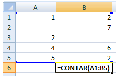
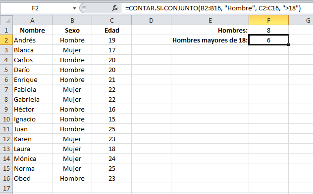

Contar Si
cuenta la cantidad de celdas que contienen numeros y cuenta los numeros dentro de la lista de argumentos. La funcion CONTAR obtiene la cantidad de entradas en un campo de numero de un rango o matriz de numeros.

<=CONTAR(A1:B5) ;En este caso, utilizando el ejemplo de la imagen, el resultado sera igual a 8.
Contar Si Conjunto
Cuenta las celdas, dentro del rango, que no estan en blanco y que cumplen con el criterio especificado. =CONTAR.SI(rango;criterio) ;Rango es el rango dentro del cual desea contar el numero de celdas que no estan en blanco, y Criterio es el criterio en forma de numero, expresion o texto, que determina las celdas que se van a contar. Por ejemplo, el argumento criterio puede expresarse como 32; "32"; ">32" o "manzanas".
Se tiene una lista de personas (hombres y mujeres) que estan en un rango de edad entre los 15 y los 25 años de edad.Se desea conocer el numero total de hombres, y se puede calcular de la siguiente manera: =CONTAR.SI.CONJUNTO(B2:B16, "Hombre"); El verdadero potencial de la función CONTAR.SI.CONJUNTO es cuando necesitamos especificar más de un criterio en nuestra cuenta. Por ejemplo, si en la lista anterior se necesita contar los hombres mayores de 18 años, se puede utilizar la siguiente fórmula: =CONTAR.SI.CONJUNTO(B2:B16, "Hombre", C2:C16, ">18") ; El resultado se muestra en la celda F2
